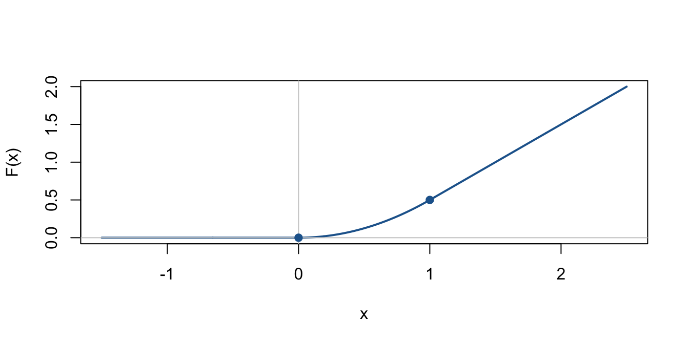

Tema 3. Càlcul integral d’una variable
Llista 1. Càlcul de primitives
Exercici 1
Resoleu les integrals següents:
a)
\[ \int (1-2x)\,dx \]
Solució
És una integral immediata; basta aplicar la linealitat i calcular cada terme per separat:
\[ \int(1-2x)\,dx=\int 1\,dx-2\int x\,dx =x-x^2+C. \]
b)
\[ \int \left(\frac{1-x}{x}\right)^2\,dx \]
Solució
Desenvolupam el quadrat i simplificam la fracció per obtenir una suma d’integrals immediates:
\[ \left(\frac{1-x}{x}\right)^2 =\frac{1}{x^2}-\frac2x+1. \]
Per tant,
\[ \begin{aligned} \int\left(\frac{1-x}{x}\right)^2\,dx &=\int(x^{-2}-2x^{-1}+1)\,dx\\ &=-\frac1x-2\ln|x|+x+C. \end{aligned} \]
c)
\[ \int \frac{(1-x)^2}{x\sqrt{x}}\,dx \]
Solució
Primer desenvolupam el quadrat i escrivim les arrels com a potències de \(x\):
\[ \frac{(1-x)^2}{x\sqrt{x}} =x^{-3/2}-2x^{-1/2}+x^{1/2}. \]
Així,
\[ \begin{aligned} \int\frac{(1-x)^2}{x\sqrt{x}}\,dx &=\int(x^{-3/2}-2x^{-1/2}+x^{1/2})\,dx\\ &=-\frac2{\sqrt{x}}-4\sqrt{x}+\frac23x^{3/2}+C. \end{aligned} \]
d)
\[ \int \frac{dx}{\sqrt{3-3x^2}} \]
Solució
Traient el factor \(\sqrt3\) del denominador, reconeixem una integral immediata de l’arcsinus:
\[ \begin{aligned} \int\frac{dx}{\sqrt{3-3x^2}} &=\frac1{\sqrt3}\int\frac{dx}{\sqrt{1-x^2}}\\ &=\frac1{\sqrt3}\arcsin x+C. \end{aligned} \]
e)
\[ \int \frac{dx}{4x^2+9} \]
Solució
El denominador es pot escriure com \(9\left(1+(2x/3)^2\right)\). Podem reconèixer directament una integral semiimmediata de l’arctangent, sense fer cap canvi de variable, ja que
\[ \left(\arctan\frac{2x}{3}\right)'=\frac{6}{4x^2+9}. \]
Per tant,
\[ \int\frac{dx}{4x^2+9}=\frac16\arctan\left(\frac{2x}{3}\right)+C. \]
També podem arribar al mateix resultat amb el canvi \(t=2x/3\). Com que \(dx=\tfrac32\,dt\),
\[ \begin{aligned} \int\frac{dx}{4x^2+9} &=\frac19\int\frac{dx}{1+(2x/3)^2}\\ &=\frac16\int\frac{dt}{1+t^2}\\ &=\frac16\arctan\left(\frac{2x}{3}\right)+C. \end{aligned} \]
f)
\[ \int \tan^2 x\,dx \]
Solució
Empram la identitat \(\tan^2x=\frac1{\cos^2x}-1\) i integram terme a terme:
\[ \begin{aligned} \int\tan^2x\,dx &=\int\left(\frac1{\cos^2x}-1\right)\,dx\\ &=\tan x-x+C. \end{aligned} \]
g)
\[ \int \frac{x^2-1}{x^2+1}\,dx \]
Solució
Dividint el numerador pel denominador, separam una constant i un terme que dona lloc a l’arctangent:
\[ \frac{x^2-1}{x^2+1}=1-\frac2{x^2+1}. \]
Aleshores,
\[ \int\frac{x^2-1}{x^2+1}\,dx =x-2\arctan x+C. \]
h)
\[ \int \cos^3 x\,dx \]
Solució
Com que la potència del cosinus és senar, separam un factor \(\cos x\) i empram \(\cos^2x=1-\sin^2x\). Això ens permet integrar directament, reconeixent la derivada de les potències de \(\sin x\):
\[ \begin{aligned} \int\cos^3x\,dx &=\int\cos x(1-\sin^2x)\,dx\\ &=\sin x-\frac{\sin^3x}{3}+C. \end{aligned} \]
Si preferim fer el canvi \(t=\sin x\), obtenim el mateix resultat. En efecte, \(dt=\cos x\,dx\) i
\[ \begin{aligned} \int\cos^3x\,dx &=\int(1-t^2)\,dt\\ &=t-\frac{t^3}{3}+C\\ &=\sin x-\frac{\sin^3x}{3}+C. \end{aligned} \]
i)
\[ \int \frac{\sqrt{x}+\ln x}{x}\,dx \]
Solució
Aplicam la linealitat. El primer sumand és immediat; el segon també es pot integrar directament si reconeixem que la derivada de \((\ln x)^2\) és \(2\ln x/x\):
\[ \begin{aligned} \int\frac{\sqrt{x}+\ln x}{x}\,dx &=\int x^{-1/2}\,dx+\int\frac{\ln x}{x}\,dx\\ &=2\sqrt{x}+\frac{(\ln x)^2}{2}+C. \end{aligned} \]
Per calcular la segona integral també podem fer \(t=\ln x\). Com que \(dt=dx/x\),
\[ \int\frac{\ln x}{x}\,dx =\int t\,dt=\frac{t^2}{2}+C =\frac{(\ln x)^2}{2}+C. \]
j)
\[ \int \frac{1+2x^2}{x^2(1+x^2)}\,dx \]
Solució
La fracció es pot separar en dos termes molt senzills:
\[ \frac{1+2x^2}{x^2(1+x^2)} =\frac1{x^2}+\frac1{1+x^2}. \]
Per tant,
\[ \int\frac{1+2x^2}{x^2(1+x^2)}\,dx =-\frac1x+\arctan x+C. \]
Exercici 2
Resoleu les integrals següents (amb els canvis de variable indicats, quan n’hi hagi):
a)
\[ \int \frac{dx}{x\sqrt{x^2-2}},\qquad x=\frac{1}{t} \]
Solució
Seguim el canvi proposat a l’enunciat, \(x=1/t\).
Tenim \(dx=-t^{-2}\,dt\) i
\[ \sqrt{x^2-2}=\frac{\sqrt{1-2t^2}}{|t|}. \]
En l’interval \(x>\sqrt2\) (per tant, \(t>0\)),
\[ \begin{aligned} I&=\int\frac{-t^{-2}\,dt}{t^{-1}\sqrt{1-2t^2}/t} =-\int\frac{dt}{\sqrt{1-2t^2}}\\ &=-\frac1{\sqrt2}\arcsin(\sqrt2\,t)+C. \end{aligned} \]
Desfent el canvi, i escrivint el resultat perquè sigui vàlid en tots dos intervals del domini \(|x|>\sqrt2\), obtenim
\[ I=-\frac1{\sqrt2}\arcsin\left(\frac{\sqrt2}{|x|}\right)+C. \]
La constant \(C\) pot ser diferent en cada component del domini.
b)
\[ \int x^{-1/2}\cot\sqrt{x}\,dx,\qquad t=\sqrt{x} \]
Solució
La integral es pot reconèixer com a semiimmediata sense necessitat de canviar de variable. En efecte,
\[ \left(\ln|\sin\sqrt{x}|\right)' =\frac{\cot\sqrt{x}}{2\sqrt{x}}, \]
i, per tant,
\[ \int x^{-1/2}\cot\sqrt{x}\,dx =2\ln|\sin\sqrt{x}|+C. \]
El canvi indicat a l’enunciat, \(t=\sqrt{x}\), ens porta al mateix resultat. Com que \(x=t^2\) i \(dx=2t\,dt\),
\[ \begin{aligned} \int x^{-1/2}\cot\sqrt{x}\,dx &=2\int\cot t\,dt\\ &=2\int\frac{\cos t}{\sin t}\,dt\\ &=2\ln|\sin t|+C\\ &=2\ln|\sin\sqrt{x}|+C. \end{aligned} \]
c)
\[ \int \frac{dx}{\sqrt{x+1}},\qquad t=\sqrt{x+1} \]
Solució
Aquesta integral es pot calcular directament, ja que és una potència de \(x+1\) i la seva derivada interior és \(1\):
\[ \int\frac{dx}{\sqrt{x+1}} =\int(x+1)^{-1/2}\,dx =2\sqrt{x+1}+C. \]
Amb el canvi proposat, \(t=\sqrt{x+1}\), també arribam al mateix resultat. Aleshores \(x=t^2-1\) i \(dx=2t\,dt\):
\[ \begin{aligned} \int\frac{dx}{\sqrt{x+1}} &=\int\frac{2t}{t}\,dt\\ &=2t+C=2\sqrt{x+1}+C. \end{aligned} \]
d)
\[ \int \frac{\sqrt{x}}{\sqrt{x}-\sqrt[3]{x}}\,dx,\qquad x=t^6 \]
Solució
Com que apareixen arrels d’índex 2 i 3, és convenient emprar el canvi indicat \(x=t^6\), igual que als apunts.
Prenem \(t=x^{1/6}>0\). Aleshores \(\sqrt{x}=t^3\), \(\sqrt[3]{x}=t^2\) i \(dx=6t^5\,dt\). Per tant,
\[ \begin{aligned} I&=\int\frac{t^3}{t^3-t^2}\,6t^5\,dt =6\int\frac{t^6}{t-1}\,dt. \end{aligned} \]
Dividim els polinomis:
\[ \frac{t^6}{t-1}=t^5+t^4+t^3+t^2+t+1+\frac1{t-1}. \]
Integrant terme a terme,
\[ I=t^6+\frac65t^5+\frac32t^4+2t^3+3t^2+6t+6\ln|t-1|+C. \]
Desfent el canvi,
\[ \begin{aligned} I={}&x+\frac65x^{5/6}+\frac32x^{2/3}+2\sqrt{x}\\ &+3x^{1/3}+6x^{1/6}+6\ln|x^{1/6}-1|+C. \end{aligned} \]
e)
\[ \int x\cos(2-x^2)\,dx \]
Solució
No és necessari fer un canvi de variable si observam que la derivada de \(\sin(2-x^2)\) és \(-2x\cos(2-x^2)\). Per tant, la integral és semiimmediata:
\[ \int x\cos(2-x^2)\,dx =-\frac12\sin(2-x^2)+C. \]
També es pot resoldre fent \(t=2-x^2\). Com que \(dt=-2x\,dx\),
\[ \begin{aligned} \int x\cos(2-x^2)\,dx &=-\frac12\int\cos t\,dt\\ &=-\frac12\sin(2-x^2)+C. \end{aligned} \]
f)
\[ \int \frac{\arctan(x/2)}{x^2+4}\,dx \]
Solució
Podem calcular-la directament perquè la derivada de \(\arctan(x/2)\) és \(2/(x^2+4)\). Així,
\[ \left[\left(\arctan\frac{x}{2}\right)^2\right]' =\frac{4\arctan(x/2)}{x^2+4}, \]
i obtenim
\[ \int\frac{\arctan(x/2)}{x^2+4}\,dx =\frac14\left(\arctan\frac{x}{2}\right)^2+C. \]
Si volem explicitar el canvi de variable, prenem \(t=\arctan(x/2)\). Aleshores \(dt=\frac{2}{x^2+4}\,dx\) i
\[ \begin{aligned} \int\frac{\arctan(x/2)}{x^2+4}\,dx &=\frac12\int t\,dt\\ &=\frac14\left(\arctan\frac{x}{2}\right)^2+C. \end{aligned} \]
g)
\[ \int \frac{2x+3\arcsin x}{\sqrt{1-x^2}}\,dx \]
Solució
Per linealitat, separam els dos sumands:
\[ I=2\int\frac{x}{\sqrt{1-x^2}}\,dx +3\int\frac{\arcsin x}{\sqrt{1-x^2}}\,dx. \]
Tots dos són semiimmediats. Per a la primera integral, observam que \((\sqrt{1-x^2})'=-x/\sqrt{1-x^2}\). Per a la segona, tenim
\[ \left((\arcsin x)^2\right)'=\frac{2\arcsin x}{\sqrt{1-x^2}}. \]
Així, sense fer cap canvi explícit,
\[ I=-2\sqrt{1-x^2}+\frac32(\arcsin x)^2+C. \]
En qualsevol cas, la segona integral també es pot resoldre amb \(t=\arcsin x\), d’on \(dt=dx/\sqrt{1-x^2}\):
\[ 3\int\frac{\arcsin x}{\sqrt{1-x^2}}\,dx =3\int t\,dt =\frac32(\arcsin x)^2+C. \]
h)
\[ \int \frac{1+x}{1+\sqrt{x}}\,dx \]
Solució
La presència de \(\sqrt{x}\) suggereix fer \(t=\sqrt{x}\); després, només cal dividir polinomis.
Com que \(x=t^2\) i \(dx=2t\,dt\),
\[ I=2\int\frac{t(1+t^2)}{1+t}\,dt. \]
Efectuam la divisió:
\[ \frac{t(1+t^2)}{1+t} =t^2-t+2-\frac2{t+1}. \]
Així,
\[ \begin{aligned} I&=2\int\left(t^2-t+2-\frac2{t+1}\right)dt\\ &=\frac23t^3-t^2+4t-4\ln|t+1|+C. \end{aligned} \]
Desfent el canvi (amb \(t\ge0\)),
\[ I=\frac23x^{3/2}-x+4\sqrt{x}-4\ln(1+\sqrt{x})+C. \]
i)
\[ \int \frac{dx}{\sqrt{e^x-1}} \]
Solució
També podem identificar una primitiva per derivació directa. Si tenim en compte que \(1+(e^x-1)=e^x\), resulta
\[ \left(\arctan\sqrt{e^x-1}\right)' =\frac{1}{1+(e^x-1)}\,\frac{e^x}{2\sqrt{e^x-1}} =\frac{1}{2\sqrt{e^x-1}}. \]
Per tant,
\[ \int\frac{dx}{\sqrt{e^x-1}} =2\arctan\sqrt{e^x-1}+C. \]
Una altra manera d’obtenir-ho és eliminar l’arrel amb el canvi \(t=\sqrt{e^x-1}\). Tenim \(e^x=1+t^2\) i \(e^x\,dx=2t\,dt\), és a dir,
\[ dx=\frac{2t}{1+t^2}\,dt. \]
Aleshores,
\[ \begin{aligned} I&=\int\frac{1}{t}\frac{2t}{1+t^2}\,dt =2\int\frac{dt}{1+t^2}\\ &=2\arctan\sqrt{e^x-1}+C. \end{aligned} \]
j)
\[ \int x\sin x\,dx \]
Solució
Com que tenim el producte d’una funció polinòmica i una trigonomètrica, integram per parts.
Triam \(u=x\) i \(dv=\sin x\,dx\). Aleshores \(du=dx\) i \(v=-\cos x\). Aplicam \(\int u\,dv=uv-\int v\,du\):
\[ \begin{aligned} \int x\sin x\,dx &=-x\cos x+\int\cos x\,dx\\ &=-x\cos x+\sin x+C. \end{aligned} \]
Exercici 3
Resoleu les integrals següents:
a)
\[ \int \ln\left(x+\sqrt{x^2+1}\right)\,dx \]
Solució
La presència del logaritme fa convenient la integració per parts.
Prenem \(u=\ln(x+\sqrt{x^2+1})\) i \(dv=dx\). Aleshores \(v=x\) i
\[ du=\frac{dx}{\sqrt{x^2+1}}. \]
Per tant,
\[ I=x\ln(x+\sqrt{x^2+1})-\int\frac{x}{\sqrt{x^2+1}}\,dx. \]
La integral que queda és semiimmediata, ja que
\[ \left(\sqrt{x^2+1}\right)'=\frac{x}{\sqrt{x^2+1}}. \]
Així, sense necessitat d’un nou canvi de variable,
\[ I=x\ln(x+\sqrt{x^2+1})-\sqrt{x^2+1}+C. \]
Si feim \(t=x^2+1\), obtenim igualment
\[ \int\frac{x}{\sqrt{x^2+1}}\,dx =\frac12\int t^{-1/2}\,dt =\sqrt{x^2+1}+C. \]
b)
\[ \int \frac{x}{\sin^2 x}\,dx \]
Solució
L’estratègia és integrar per parts, ja que la primitiva de \(1/\sin^2x\) és \(-\cot x\).
Prenem \(u=x\) i \(dv=dx/\sin^2x\). Llavors \(du=dx\) i \(v=-\cot x\). Així,
\[ \begin{aligned} \int\frac{x}{\sin^2x}\,dx &=-x\cot x+\int\cot x\,dx\\ &=-x\cot x+\ln|\sin x|+C. \end{aligned} \]
c)
\[ \int \ln^2 x\,dx \]
Solució
Aplicarem la integració per parts dues vegades.
Prenem \(u=(\ln x)^2\) i \(dv=dx\). Aleshores \(du=2\ln x\,dx/x\) i \(v=x\):
\[ \int(\ln x)^2\,dx=x(\ln x)^2-2\int\ln x\,dx. \]
La integral restant també es resol per parts:
\[ \int\ln x\,dx=x\ln x-x+C. \]
En conseqüència,
\[ \int(\ln x)^2\,dx=x\big((\ln x)^2-2\ln x+2\big)+C. \]
d)
\[ \int \arcsin x\,dx \]
Solució
El més senzill és integrar per parts, derivant l’arcsinus.
Prenem \(u=\arcsin x\) i \(dv=dx\); per tant, \(du=dx/\sqrt{1-x^2}\) i \(v=x\). Aleshores,
\[ \int\arcsin x\,dx =x\arcsin x-\int\frac{x}{\sqrt{1-x^2}}\,dx. \]
La integral que queda és semiimmediata perquè
\[ \left(\sqrt{1-x^2}\right)'=-\frac{x}{\sqrt{1-x^2}}. \]
Per això, directament,
\[ \int\arcsin x\,dx =x\arcsin x+\sqrt{1-x^2}+C. \]
També podríem fer \(t=1-x^2\), amb \(dt=-2x\,dx\), per resoldre la integral restant:
\[ \int\frac{x}{\sqrt{1-x^2}}\,dx =-\frac12\int t^{-1/2}\,dt =-\sqrt{1-x^2}+C. \]
e)
\[ \int x^2 e^{3x}\,dx \]
Solució
Combinam el polinomi i l’exponencial amb dues integracions per parts successives.
Prenem \(u=x^2\) i \(dv=e^{3x}\,dx\); així, \(du=2x\,dx\) i \(v=e^{3x}/3\):
\[ I=\frac{x^2e^{3x}}3-\frac23\int xe^{3x}\,dx. \]
Per a la segona integral tornam a aplicar parts amb \(u=x\) i \(dv=e^{3x}\,dx\):
\[ \int xe^{3x}\,dx=\frac{xe^{3x}}3-\frac{e^{3x}}9+C. \]
Substituint,
\[ I=e^{3x}\left(\frac{x^2}{3}-\frac{2x}{9}+\frac{2}{27}\right)+C. \]
f)
\[ \int x^2\ln x\,dx \]
Solució
Quan apareix un logaritme multiplicant un polinomi, convé derivar el logaritme en integrar per parts.
Prenem \(u=\ln x\) i \(dv=x^2\,dx\). Aleshores \(du=dx/x\) i \(v=x^3/3\):
\[ \begin{aligned} \int x^2\ln x\,dx &=\frac{x^3}{3}\ln x-\frac13\int x^2\,dx\\ &=\frac{x^3}{3}\ln x-\frac{x^3}{9}+C. \end{aligned} \]
Exercici 4
Resoleu les integrals següents:
a)
\[ \int \frac{2x^2-5}{x^4-5x^2+6}\,dx \]
Solució
Començam factoritzant el denominador i després descomponem la fracció en termes més simples.
\[ x^4-5x^2+6=(x^2-2)(x^2-3). \]
Cercam \(A\) i \(B\) tals que
\[ \frac{2x^2-5}{(x^2-2)(x^2-3)} =\frac{A}{x^2-2}+\frac{B}{x^2-3}. \]
Igualant coeficients, \(A+B=2\) i \(3A+2B=5\), d’on \(A=B=1\). Utilitzam, per a \(a>0\), la descomposició
\[ \frac1{x^2-a^2}=\frac1{2a}\left(\frac1{x-a}-\frac1{x+a}\right). \]
Aleshores,
\[ \begin{aligned} I={}&\frac1{2\sqrt2}\ln\left|\frac{x-\sqrt2}{x+\sqrt2}\right|\\ &+\frac1{2\sqrt3}\ln\left|\frac{x-\sqrt3}{x+\sqrt3}\right|+C. \end{aligned} \]
b)
\[ \int \frac{dx}{x(x+1)^2} \]
Solució
El denominador té el factor repetit \((x+1)^2\); per això, la descomposició en fraccions simples ha d’incloure les dues potències.
Plantejam
\[ \frac1{x(x+1)^2}=\frac A x+\frac B{x+1}+\frac C{(x+1)^2}. \]
Multiplicant per \(x(x+1)^2\) i igualant coeficients, obtenim \(A=1\), \(B=-1\) i \(C=-1\). Per tant,
\[ \begin{aligned} I&=\int\left(\frac1x-\frac1{x+1}-\frac1{(x+1)^2}\right)dx\\ &=\ln|x|-\ln|x+1|+\frac1{x+1}+C. \end{aligned} \]
c)
\[ \int \frac{dx}{x^3+1} \]
Solució
Com que el denominador té un factor lineal i un factor quadràtic sense arrels reals, descomponem en fraccions simples i completam el quadrat.
Factoritzam \(x^3+1=(x+1)(x^2-x+1)\) i cercam
\[ \frac1{x^3+1}=\frac A{x+1}+\frac{Bx+D}{x^2-x+1}. \]
Igualant coeficients, \(A=\tfrac13\), \(B=-\tfrac13\) i \(D=\tfrac23\). Així,
\[ I=\frac13\int\frac{dx}{x+1} -\frac16\int\frac{2x-1}{x^2-x+1}\,dx +\frac12\int\frac{dx}{x^2-x+1}. \]
Com que
\[ x^2-x+1=\left(x-\frac12\right)^2+\frac34, \]
la darrera integral és de tipus arctangent. Finalment,
\[ \begin{aligned} I={}&\frac13\ln|x+1|-\frac16\ln(x^2-x+1)\\ &+\frac1{\sqrt3}\arctan\left(\frac{2x-1}{\sqrt3}\right)+C. \end{aligned} \]
d)
\[ \int \frac{x^4-2x^2+2}{x^2-2x+2}\,dx \]
Solució
Com que el numerador té grau més gran que el denominador, començam dividint els polinomis.
La divisió dóna
\[ \frac{x^4-2x^2+2}{x^2-2x+2} =x^2+2x+\frac{2-4x}{x^2-2x+2}. \]
Si \(q(x)=x^2-2x+2=(x-1)^2+1\), tenim \(2-4x=-2q'(x)-2\). Per tant,
\[ \begin{aligned} I&=\int(x^2+2x)\,dx -2\int\frac{q'(x)}{q(x)}\,dx -2\int\frac{dx}{(x-1)^2+1}\\ &=\frac{x^3}{3}+x^2-2\ln(x^2-2x+2)-2\arctan(x-1)+C. \end{aligned} \]
e)
\[ \int \frac{dx}{x^3+1} \]
Solució
És la mateixa integral de l’apartat c). Tornam a emprar fraccions simples i completam el quadrat.
Factoritzam \(x^3+1=(x+1)(x^2-x+1)\) i cercam
\[ \frac1{x^3+1}=\frac A{x+1}+\frac{Bx+D}{x^2-x+1}. \]
Igualant coeficients, \(A=\tfrac13\), \(B=-\tfrac13\) i \(D=\tfrac23\). Així,
\[ I=\frac13\int\frac{dx}{x+1} -\frac16\int\frac{2x-1}{x^2-x+1}\,dx +\frac12\int\frac{dx}{x^2-x+1}. \]
Com que
\[ x^2-x+1=\left(x-\frac12\right)^2+\frac34, \]
la darrera integral és de tipus arctangent. Finalment,
\[ \begin{aligned} I={}&\frac13\ln|x+1|-\frac16\ln(x^2-x+1)\\ &+\frac1{\sqrt3}\arctan\left(\frac{2x-1}{\sqrt3}\right)+C. \end{aligned} \]
f)
\[ \int \frac{\sin^3 x}{\cos^2 x}\,dx \]
Solució
Escrivim \(\sin^3x=\sin x(1-\cos^2x)\) i simplificam. Així podem integrar directament, perquè reconeixem les derivades de \(1/\cos x\) i de \(\cos x\):
\[ \begin{aligned} I&=\int\frac{\sin x(1-\cos^2x)}{\cos^2x}\,dx\\ &=\int\left(\frac{\sin x}{\cos^2x}-\sin x\right)dx\\ &=\frac1{\cos x}+\cos x+C. \end{aligned} \]
Aquest càlcul també es pot fer mitjançant el canvi \(t=\cos x\). Com que \(dt=-\sin x\,dx\),
\[ \begin{aligned} I&=-\int\frac{1-t^2}{t^2}\,dt =-\int(t^{-2}-1)\,dt\\ &=\frac1t+t+C =\frac1{\cos x}+\cos x+C. \end{aligned} \]
g)
\[ \int \frac{\cos^3 x}{\sin^2 x+\sin x}\,dx \]
Solució
Separam un factor \(\cos x\) i utilitzam \(\cos^2x=1-\sin^2x\). Com que \(1-\sin^2x=(1-\sin x)(1+\sin x)\), podem simplificar la fracció i reconèixer les primitives directament:
\[ \begin{aligned} I&=\int\frac{\cos x(1-\sin^2x)}{\sin x(1+\sin x)}\,dx\\ &=\int\left(\frac{\cos x}{\sin x}-\cos x\right)dx\\ &=\ln|\sin x|-\sin x+C. \end{aligned} \]
Una altra opció és fer \(t=\sin x\), amb \(dt=\cos x\,dx\). En aquest cas,
\[ \begin{aligned} I&=\int\frac{1-t^2}{t^2+t}\,dt =\int\frac{(1-t)(1+t)}{t(1+t)}\,dt\\ &=\int\left(\frac1t-1\right)dt\\ &=\ln|\sin x|-\sin x+C. \end{aligned} \]
h)
\[ \int \sin^2\left(\frac{x}{4}\right)\cos^2\left(\frac{x}{4}\right)\,dx \]
Solució
Amb les identitats de l’angle doble podem transformar el producte en una suma de funcions immediates:
\[ \begin{aligned} \sin^2\frac x4\cos^2\frac x4 &=\frac14\sin^2\frac x2\\ &=\frac18(1-\cos x). \end{aligned} \]
D’aquí,
\[ \int\sin^2\frac x4\cos^2\frac x4\,dx =\frac x8-\frac{\sin x}{8}+C. \]
i)
\[ \int \frac{\cos^3 x}{\sin^2 x}\,dx \]
Solució
Podem separar un factor \(\cos x\) i aplicar la identitat \(\cos^2x=1-\sin^2x\). Així arribam a una suma d’integrals semiimmediates:
\[ \begin{aligned} I&=\int\frac{\cos x(1-\sin^2x)}{\sin^2x}\,dx\\ &=\int\left(\frac{\cos x}{\sin^2x}-\cos x\right)dx\\ &=-\frac1{\sin x}-\sin x+C. \end{aligned} \]
També podem prendre \(t=\sin x\), amb \(dt=\cos x\,dx\). Aleshores,
\[ \begin{aligned} I&=\int\frac{1-t^2}{t^2}\,dt =\int(t^{-2}-1)\,dt\\ &=-\frac1t-t+C\\ &=-\frac1{\sin x}-\sin x+C. \end{aligned} \]
j)
\[ \int x^2\sqrt{4-x^2}\,dx \]
Solució
Per a radicals de la forma \(\sqrt{a^2-x^2}\), els apunts proposen una substitució trigonomètrica. En aquest cas, prenem \(x=2\sin t\). Aleshores \(dx=2\cos t\,dt\) i, escollint la branca adequada del canvi, \(\sqrt{4-x^2}=2\cos t\). Així,
\[ \begin{aligned} I&=16\int\sin^2t\cos^2t\,dt\\ &=2\int(1-\cos4t)\,dt\\ &=2t-\frac12\sin4t+C. \end{aligned} \]
Desfem el canvi mitjançant
\[ t=\arcsin(x/2),\qquad \sin4t=\frac{x(2-x^2)\sqrt{4-x^2}}{2}. \]
Per tant,
\[ I=2\arcsin\frac x2+\frac{x(x^2-2)\sqrt{4-x^2}}4+C. \]
Exercici 5
Resoleu les integrals següents, fent servir en cada cas el mètode més adequat:
a)
\[ \int \frac{\ln x}{\sqrt{x}}\,dx \]
Solució
Per resoldre aquesta integral, integram per parts.
Triam \(u=\ln x\) i \(dv=x^{-1/2}\,dx\), de manera que \(du=dx/x\) i \(v=2\sqrt{x}\). Aleshores,
\[ \begin{aligned} I&=2\sqrt{x}\ln x-2\int x^{-1/2}\,dx\\ &=2\sqrt{x}\ln x-4\sqrt{x}+C. \end{aligned} \]
b)
\[ \int \sin(\ln x)\,dx \]
Solució
El canvi \(t=\ln x\) transforma la integral en una d’exponencial per trigonomètrica, que resolrem per parts de manera cíclica.
Prenem \(t=\ln x\), de manera que \(x=e^t\) i \(dx=e^t\,dt\):
\[ I=\int e^t\sin t\,dt. \]
Integrant per parts dos cops, com a les integrals cícliques dels apunts, obtenim
\[ \begin{aligned} I&=-e^t\cos t+\int e^t\cos t\,dt\\ &=-e^t\cos t+e^t\sin t-I. \end{aligned} \]
Per tant, \(2I=e^t(\sin t-\cos t)\), i desfent el canvi,
\[ I=\frac x2\bigl(\sin(\ln x)-\cos(\ln x)\bigr)+C. \]
c)
\[ \int \frac{x^2}{(x-1)^5}\,dx \]
Solució
Podem resoldre aquesta integral directament si escrivim el numerador en potències de \(x-1\):
\[ x^2=(x-1)^2+2(x-1)+1. \]
D’aquesta manera obtenim una suma d’integrals semiimmediates, sense necessitat de canviar de variable:
\[ \begin{aligned} I&=\int\left((x-1)^{-3}+2(x-1)^{-4}+(x-1)^{-5}\right)dx\\ &=-\frac1{2(x-1)^2}-\frac2{3(x-1)^3}-\frac1{4(x-1)^4}+C. \end{aligned} \]
El canvi \(t=x-1\) dona el mateix resultat. En efecte, \(x=t+1\) i \(dx=dt\), i per tant
\[ \begin{aligned} I&=\int\frac{(t+1)^2}{t^5}\,dt\\ &=\int(t^{-3}+2t^{-4}+t^{-5})\,dt\\ &=-\frac1{2t^2}-\frac2{3t^3}-\frac1{4t^4}+C. \end{aligned} \]
Desfent el canvi,
\[ I=-\frac1{2(x-1)^2}-\frac2{3(x-1)^3}-\frac1{4(x-1)^4}+C. \]
d)
\[ \int \frac{\ln(\ln x)}{x}\,dx \]
Solució
Primer eliminam el quocient amb el canvi \(t=\ln x\). La integral resultant es resol per parts.
Com que \(dt=dx/x\),
\[ I=\int\ln t\,dt. \]
Triant \(u=\ln t\) i \(dv=dt\), tenim \(du=dt/t\) i \(v=t\). Per tant,
\[ \int\ln t\,dt=t\ln t-t+C. \]
Desfent el canvi,
\[ I=\ln x\,\ln(\ln x)-\ln x+C,\qquad x>1. \]
e)
\[ \int \frac{x^2-5x+9}{x^2-5x+6}\,dx \]
Solució
Com que numerador i denominador tenen el mateix grau, començam fent la divisió; després descomponem en fraccions simples.
\[ \frac{x^2-5x+9}{x^2-5x+6} =1+\frac3{(x-2)(x-3)}. \]
Descomponem la fracció pròpia:
\[ \frac3{(x-2)(x-3)} =-\frac3{x-2}+\frac3{x-3}. \]
Aleshores,
\[ I=x-3\ln|x-2|+3\ln|x-3|+C. \]
f)
\[ \int \cos^5 x\,dx \]
Solució
La potència del cosinus és senar. Separam un factor \(\cos x\) i escrivim
\[ \cos^5x=\cos x(1-\sin^2x)^2 =\cos x(1-2\sin^2x+\sin^4x). \]
Ara podem integrar directament terme a terme: són integrals semiimmediates perquè hi apareix el factor \(\cos x\), que és la derivada de \(\sin x\). Obtenim
\[ \int\cos^5x\,dx =\sin x-\frac23\sin^3x+\frac15\sin^5x+C. \]
Si, en canvi, explicitam el canvi \(t=\sin x\), tenim \(dt=\cos x\,dx\) i
\[ \begin{aligned} I&=\int(1-t^2)^2\,dt =\int(1-2t^2+t^4)\,dt\\ &=t-\frac23t^3+\frac15t^5+C\\ &=\sin x-\frac23\sin^3x+\frac15\sin^5x+C. \end{aligned} \]
g)
\[ \int \frac{dx}{\sqrt{x^2-1}} \]
Solució
Per a \(\sqrt{x^2-1}\) podem emprar la substitució trigonomètrica \(x=1/\cos t\). Després apareixerà una integral racional.
Per calcular-la, consideram primer \(x>1\) i prenem \(x=1/\cos t\). Amb aquest canvi, \(dx=(\sin t/\cos^2t)\,dt\) i \(\sqrt{x^2-1}=\tan t\). Així,
\[ I=\int\frac{dt}{\cos t}. \]
Escrivim
\[ \frac1{\cos t}=\frac{\cos t}{1-\sin^2t}, \]
fem \(u=\sin t\) i descomponem en fraccions simples:
\[ \begin{aligned} I&=\int\frac{du}{1-u^2}\\ &=\frac12\int\left(\frac1{1+u}+\frac1{1-u}\right)du\\ &=\frac12\ln\left|\frac{1+u}{1-u}\right|+C. \end{aligned} \]
Com que \(u=\sqrt{x^2-1}/x\) i \((x+\sqrt{x^2-1})(x-\sqrt{x^2-1})=1\), resulta
\[ I=\ln\left|x+\sqrt{x^2-1}\right|+C. \]
Aquesta expressió també és vàlida en l’altre interval del domini, \(x<-1\), amb una constant d’integració pròpia.
h)
\[ \int \frac{dx}{x^2\sqrt{1+x^2}} \]
Solució
La substitució \(x=\tan t\) elimina el radical \(\sqrt{1+x^2}\) i permet reduir la integral a una immediata.
Prenem \(x=\tan t\). Aleshores \(dx=dt/\cos^2t\) i, escollint la branca adequada del canvi, \(\sqrt{1+x^2}=1/\cos t\). Per tant,
\[ \begin{aligned} I&=\int\frac{1}{\tan^2t}\cdot\cos t\,dt\\ &=\int\frac{\cos t}{\sin^2t}\,dt. \end{aligned} \]
Amb \(u=\sin t\), \(du=\cos t\,dt\), obtenim
\[ I=\int u^{-2}\,du=-\frac1u+C=-\frac1{\sin t}+C. \]
Com que \(\sin t=x/\sqrt{1+x^2}\), desfent el canvi,
\[ I=-\frac{\sqrt{1+x^2}}{x}+C. \]
Llista 2. Aplicacions de la integral i integració impròpia
Exercici 1
Sigui \(f:\mathbb{R}\to\mathbb{R}\) la funció definida com
\[ f(x)=\begin{cases} 0, & \text{si }x<0,\\ x, & \text{si }0\leq x\leq 1,\\ 1, & \text{si }x>1. \end{cases} \]
a)
Determinau la funció àrea \(F(x)=\int_0^x f(t)\,dt\).
Solució
Per a \(x<0\) integram una funció nul·la. Si \(0\le x\le1\), integram \(f(t)=t\), i per a \(x>1\) separam la integral en \([0,1]\) i \([1,x]\). Així,
\[ F(x)=\begin{cases} 0, & x<0,\\[2mm] \displaystyle\int_0^x t\,dt=\dfrac{x^2}{2}, & 0\le x\le1,\\[3mm] \displaystyle\int_0^1t\,dt+\int_1^x1\,dt=x-\dfrac12, & x>1. \end{cases} \]
b)
Representau \(F\) gràficament i estudiau la seva continuïtat.
Solució
La gràfica està formada per una recta horitzontal \(F(x)=0\) fins a \(x=0\), un arc de paràbola \(F(x)=x^2/2\) entre \(0\) i \(1\), i una recta de pendent \(1\) a partir de \(x=1\).
Cada tram és continu. Als punts d’unió, els límits laterals coincideixen amb el valor de la funció:
\[ \lim_{x\to0^-}F(x)=\lim_{x\to0^+}F(x)=F(0)=0, \]
\[ \lim_{x\to1^-}F(x)=\lim_{x\to1^+}F(x)=F(1)=\frac12. \]
Per tant, \(F\) és contínua en tot \(\mathbb{R}\).
c)
On és \(F\) derivable? Calculau \(F'\) en els punts on sigui derivable.
Solució
Com que \(f\) és contínua en tot \(\mathbb{R}\), el teorema fonamental del càlcul garanteix que \(F\) és derivable pertot i que \(F'=f\). En particular,
\[ F'(x)=\begin{cases} 0, & x<0,\\ x, & 0\le x\le1,\\ 1, & x>1. \end{cases} \]
També es pot comprovar directament que les derivades laterals coincideixen als punts \(x=0\) i \(x=1\).
Exercici 2
Calculau les derivades de les següents funcions:
a)
\[ F(x)=\int_0^{x^2}\frac{dt}{1+t^3} \]
Solució
Pel teorema fonamental del càlcul i la regla de la cadena, si \(G(u)=\int_0^u(1+t^3)^{-1}\,dt\), llavors \(G'(u)=(1+u^3)^{-1}\). Com que \(F(x)=G(x^2)\),
\[ F'(x)=\frac{1}{1+(x^2)^3}\,2x=\frac{2x}{1+x^6}. \]
b)
\[ F(x)=\int_0^x x f(t)\,dt,\qquad f\text{ contínua en }\mathbb{R}. \]
Solució
El factor \(x\) que multiplica la integral no és la variable d’integració, sinó un factor exterior. Aplicam la regla del producte i, després, el teorema fonamental del càlcul:
\[ \begin{aligned} F'(x)&=\frac{d}{dx}\left(x\int_0^xf(t)\,dt\right)\\ &=\int_0^xf(t)\,dt+xf(x). \end{aligned} \]
c)
\[ F(x)=\int_{\sqrt{x}}^{x^2+x}\frac{dt}{2+\sqrt[3]{t^2}} \]
Solució
L’integrand és continu per a \(t\ge0\). Aplicam la fórmula del teorema fonamental del càlcul quan els dos extrems depenen de \(x\):
\[ \frac{d}{dx}\int_{g(x)}^{h(x)}k(t)\,dt =k(h(x))h'(x)-k(g(x))g'(x). \]
En aquest cas, \(h(x)=x^2+x\), \(g(x)=\sqrt{x}\) i \(k(t)=1/(2+\sqrt[3]{t^2})\). Per a \(x>0\) resulta
\[ F'(x)=\frac{2x+1}{2+\sqrt[3]{(x^2+x)^2}} -\frac{1}{2\sqrt{x}\left(2+\sqrt[3]{x}\right)}. \]
La funció està definida per a \(x\ge0\), però no és derivable en \(x=0\): el segon terme divergeix cap a \(-\infty\) quan \(x\to0^+\).
d)
\[ F(x)=\left(\int_0^x\frac{dt}{1+\sin^2 t}\right)^3 \]
Solució
Derivam primer la potència amb la regla de la cadena i després la integral amb el teorema fonamental del càlcul:
\[ \begin{aligned} F'(x)&=3\left(\int_0^x\frac{dt}{1+\sin^2t}\right)^2 \frac{d}{dx}\left(\int_0^x\frac{dt}{1+\sin^2t}\right)\\ &=\frac{3}{1+\sin^2x} \left(\int_0^x\frac{dt}{1+\sin^2t}\right)^2. \end{aligned} \]
Exercici 3
Sigui \(f:\mathbb{R}\to\mathbb{R}\) una funció contínua. Calculau \(f(2)\) sabent que
\[ \int_0^x f(t)\,dt=x^2(1+x). \]
Solució
Com que \(f\) és contínua, podem derivar els dos membres de la igualtat aplicant el teorema fonamental del càlcul:
\[ f(x)=\frac{d}{dx}\bigl(x^2(1+x)\bigr)=2x+3x^2. \]
Avaluant en \(x=2\), obtenim \(f(2)=4+12=16\).
Exercici 4
Sigui \(F:[0,+\infty)\to\mathbb{R}\) definida com
\[ F(x)=\int_0^x\ln(2+t)\,dt. \]
a)
Calculau \(F(0)\).
Solució
Els dos extrems d’integració coincideixen; per tant, sense necessitat de calcular cap primitiva,
\[ F(0)=\int_0^0\ln(2+t)\,dt=0. \]
b)
Calculau \(F'(x)\) i provau que \(F\) és estrictament creixent en el seu domini.
Solució
La funció \(t\mapsto\ln(2+t)\) és contínua en \([0,+\infty)\); pel teorema fonamental del càlcul,
\[ F'(x)=\ln(2+x). \]
Si \(x\ge0\), tenim \(2+x\ge2>1\), de manera que \(\ln(2+x)>0\). Així, \(F\) és estrictament creixent en tot \([0,+\infty)\).
Exercici 5
Considereu \(F:\mathbb{R}\to\mathbb{R}\) donada per
\[ F(x)=\int_0^x(t^2-1)\,dt. \]
a)
Calculau \(F(3)\).
Solució
Aplicam la regla de Barrow després d’obtenir la primitiva de \(t^2-1\):
\[ F(3)=\int_0^3(t^2-1)\,dt =\left[\frac{t^3}{3}-t\right]_0^3=9-3=6. \]
b)
Determinau els extrems relatius de \(F\).
Solució
Pel teorema fonamental del càlcul,
\[ F'(x)=x^2-1=(x-1)(x+1). \]
La derivada és positiva en \((-\infty,-1)\cup(1,+\infty)\) i negativa en \((-1,1)\). Per tant, \(F\) té un màxim relatiu en \(x=-1\) i un mínim relatiu en \(x=1\). Com que \(F(x)=x^3/3-x\), els valors corresponents són
\[ F(-1)=\frac23,\qquad F(1)=-\frac23. \]
Exercici 6
Calculau els següents límits:
a)
\[ \lim_{x\to 0}\frac{1}{x}\int_0^x e^{t^2}\,dt \]
Solució
El numerador i el denominador tendeixen a zero. Aplicam la regla de L’Hôpital i derivam la integral amb el teorema fonamental del càlcul:
\[ \lim_{x\to0}\frac{\int_0^xe^{t^2}\,dt}{x} =\lim_{x\to0}e^{x^2}=1. \]
b)
\[ \lim_{x\to 1}\frac{1}{x-1}\int_1^x\sqrt{1+2t^2}\,dt \]
Solució
Novament apareix una indeterminació \(0/0\). Pel teorema fonamental del càlcul,
\[ \lim_{x\to1}\frac{\int_1^x\sqrt{1+2t^2}\,dt}{x-1} =\lim_{x\to1}\sqrt{1+2x^2}=\sqrt3. \]
c)
\[ \lim_{x\to 0}\frac{1}{x^3}\left(x-\int_0^x\frac{\sin t}{t}\,dt\right) \]
Solució
Es tracta d’una indeterminació \(0/0\). Escrivim el numerador com una diferència de funcions derivables i aplicam L’Hôpital:
\[ \begin{aligned} L&=\lim_{x\to0}\frac{x-\int_0^x\frac{\sin t}{t}\,dt}{x^3}\\ &=\lim_{x\to0}\frac{1-\frac{\sin x}{x}}{3x^2} =\frac13\lim_{x\to0}\frac{x-\sin x}{x^3}. \end{aligned} \]
Aplicam L’Hôpital successivament a la darrera expressió:
\[ \lim_{x\to0}\frac{x-\sin x}{x^3} =\lim_{x\to0}\frac{1-\cos x}{3x^2} =\lim_{x\to0}\frac{\sin x}{6x} =\frac16. \]
En conseqüència, \(L=\frac1{18}\). Hem utilitzat la prolongació contínua de \(\sin t/t\) en \(t=0\), que val \(1\).
d)
\[ \lim_{x\to 0}\frac{1}{x^3}\int_0^{\sin x}(e^{t^2}-1)\,dt \]
Solució
Tant el numerador com el denominador tendeixen a zero. Derivam el numerador emprant el teorema fonamental del càlcul i la regla de la cadena:
\[ \begin{aligned} L&=\lim_{x\to0}\frac{\int_0^{\sin x}(e^{t^2}-1)\,dt}{x^3}\\ &=\lim_{x\to0}\frac{(e^{\sin^2x}-1)\cos x}{3x^2}\\ &=\frac13\lim_{x\to0}\frac{e^{\sin^2x}-1}{\sin^2x} \left(\frac{\sin x}{x}\right)^2\cos x =\frac13. \end{aligned} \]
En el darrer pas hem emprat els límits immediats \(\lim_{u\to0}(e^u-1)/u=1\) i \(\lim_{x\to0}\sin x/x=1\).
Exercici 7
Trobau el valor de \(\alpha>0\) que minimitza el valor de la integral
\[ \int_{\alpha}^{\alpha^2}\frac{dx}{x+\sqrt{x}}. \]
Solució
Com que \(\alpha>0\), el denominador és positiu. Per trobar el mínim, primer calculam la integral com a funció de \(\alpha\). Amb el canvi \(t=\sqrt{x}\), tenim \(dx=2t\,dt\) i els extrems passen de \(x=\alpha,\alpha^2\) a \(t=\sqrt\alpha,\alpha\). Per tant,
\[ \begin{aligned} I(\alpha)&=\int_\alpha^{\alpha^2}\frac{dx}{x+\sqrt{x}}\\ &=2\int_{\sqrt\alpha}^{\alpha}\frac{dt}{t+1} =2\ln\frac{1+\alpha}{1+\sqrt\alpha}. \end{aligned} \]
Per simplificar la derivació, posam \(u=\sqrt\alpha>0\). Minimitzar \(I(\alpha)\) equival a minimitzar \(J(u)=2\ln\bigl((1+u^2)/(1+u)\bigr)\). Derivant,
\[ J'(u)=2\left(\frac{2u}{1+u^2}-\frac1{1+u}\right) =\frac{2(u^2+2u-1)}{(1+u^2)(1+u)}. \]
L’única arrel positiva és \(u=\sqrt2-1\). La derivada passa de negativa a positiva en aquest punt, de manera que és el mínim global (també tenim \(J(u)\to0\) quan \(u\to0^+\) i \(J(u)\to+\infty\) quan \(u\to+\infty\)). En conseqüència,
\[ \alpha=(\sqrt2-1)^2=3-2\sqrt2. \]
Exercici 8
Calculau les següents integrals:
a)
\[ \int_0^4\frac{dx}{1+\sqrt{x}} \]
Solució
El radical suggereix el canvi \(t=\sqrt{x}\), amb \(x=t^2\) i \(dx=2t\,dt\). Els nous extrems són \(0\) i \(2\):
\[ \begin{aligned} \int_0^4\frac{dx}{1+\sqrt{x}} &=2\int_0^2\frac{t}{1+t}\,dt\\ &=2\int_0^2\left(1-\frac1{t+1}\right)dt\\ &=2[t-\ln(1+t)]_0^2=4-2\ln3. \end{aligned} \]
b)
\[ \int_2^4\ln x\,dx \]
Solució
Integram per parts, prenent \(u=\ln x\) i \(dv=dx\). Així \(du=dx/x\) i \(v=x\), d’on la primitiva \(x\ln x-x\). Aplicant Barrow,
\[ \int_2^4\ln x\,dx=[x\ln x-x]_2^4=6\ln2-2. \]
c)
\[ \int_e^{e^2}\frac{dx}{x\ln x} \]
Solució
Reconeixem una integral semiimmediata: la derivada de \(\ln x\) és \(1/x\). També podem explicitar \(t=\ln x\), que transforma els extrems \(e\) i \(e^2\) en \(1\) i \(2\):
\[ \int_e^{e^2}\frac{dx}{x\ln x} =\int_1^2\frac{dt}{t}=[\ln t]_1^2=\ln2. \]
d)
\[ \int_0^{\pi/4}\tan^2x\,dx \]
Solució
Amb la identitat \(\tan^2x=1/\cos^2x-1\) obtenim una integral immediata:
\[ \int_0^{\pi/4}\tan^2x\,dx =[\tan x-x]_0^{\pi/4}=1-\frac\pi4. \]
e)
\[ \int_{-4}^4\sqrt{16-x^2}\,dx \]
Solució
La corba \(y=\sqrt{16-x^2}\) és la semicircumferència superior de radi \(4\). La integral representa la seva àrea, que és la meitat de l’àrea del cercle:
\[ \int_{-4}^4\sqrt{16-x^2}\,dx =\frac12\pi\cdot4^2=8\pi. \]
També es pot obtenir aplicant la regla de Barrow amb una primitiva calculada mitjançant \(x=4\sin t\), com als apunts.
f)
\[ \int_0^3\frac{dx}{\sqrt{1+x}} \]
Solució
És una integral semiimmediata de potència. Per la regla de Barrow,
\[ \int_0^3\frac{dx}{\sqrt{1+x}} =\left[2\sqrt{1+x}\right]_0^3=2(2-1)=2. \]
g)
\[ \int_2^5\frac{dx}{x^2+x-2} \]
Solució
Factoritzam el denominador i descomponem en fraccions simples:
\[ \frac1{x^2+x-2}=\frac1{(x-1)(x+2)} =\frac13\left(\frac1{x-1}-\frac1{x+2}\right). \]
Aleshores,
\[ \begin{aligned} \int_2^5\frac{dx}{x^2+x-2} &=\frac13\left[\ln\left|\frac{x-1}{x+2}\right|\right]_2^5\\ &=\frac13\ln\frac{16}{7}. \end{aligned} \]
h)
\[ \int_{-8}^{-1}\frac{x-x^2}{2\sqrt[3]{x}}\,dx \]
Solució
Com que l’interval és negatiu, interpretam les potències fraccionàries amb arrels cúbiques reals. Simplificam:
\[ \frac{x-x^2}{2\sqrt[3]x} =\frac12\left(x^{2/3}-x^{5/3}\right). \]
Una primitiva és \(\frac3{10}x^{5/3}-\frac3{16}x^{8/3}\), d’on
\[ \begin{aligned} \int_{-8}^{-1}\frac{x-x^2}{2\sqrt[3]x}\,dx &=\left[\frac3{10}x^{5/3}-\frac3{16}x^{8/3}\right]_{-8}^{-1}\\ &=\frac{4569}{80}. \end{aligned} \]
i)
\[ \int_0^4\left|x^2-4x+3\right|\,dx \]
Solució
El polinomi \(q(x)=x^2-4x+3=(x-1)(x-3)\) canvia de signe en \(x=1\) i \(x=3\). És positiu en \([0,1]\) i \([3,4]\), i negatiu en \((1,3)\). Per això, dividim la integral:
\[ \begin{aligned} I&=\int_0^1q(x)\,dx-\int_1^3q(x)\,dx+\int_3^4q(x)\,dx\\ &=\left[\frac{x^3}{3}-2x^2+3x\right]_0^1 -\left[\frac{x^3}{3}-2x^2+3x\right]_1^3 +\left[\frac{x^3}{3}-2x^2+3x\right]_3^4\\ &=\frac43+\frac43+\frac43=4. \end{aligned} \]
j)
\[ \int_0^\pi\frac{\sin x}{\cos x+4}\,dx \]
Solució
Podem reconèixer directament una integral semiimmediata, perquè \((4+\cos x)'=-\sin x\). Equivalentment, el canvi \(t=4+\cos x\) porta els extrems \(0\) i \(\pi\) a \(5\) i \(3\):
\[ \int_0^\pi\frac{\sin x}{4+\cos x}\,dx =-\int_5^3\frac{dt}{t}=\ln\frac53. \]
k)
\[ \int_0^{\pi/4}\frac{1-\sin^2x}{\cos^2x}\,dx \]
Solució
Basta emprar la identitat \(1-\sin^2x=\cos^2x\). Com que \(\cos x\ne0\) a \([0,\pi/4]\),
\[ \int_0^{\pi/4}\frac{1-\sin^2x}{\cos^2x}\,dx =\int_0^{\pi/4}1\,dx=\frac\pi4. \]
l)
\[ \int_{-\pi}^\pi\left|x\cos x\right|\,dx \]
Solució
La funció \(|x\cos x|\) és parella. En \([0,\pi/2]\) el cosinus és positiu i en \([\pi/2,\pi]\) és negatiu. Per tant,
\[ I=2\left(\int_0^{\pi/2}x\cos x\,dx-\int_{\pi/2}^{\pi}x\cos x\,dx\right). \]
Integrant per parts obtenim \(\int x\cos x\,dx=x\sin x+\cos x\). Aplicant Barrow als dos intervals,
\[ I=2\left[\left(\frac\pi2-1\right)-\left(-1-\frac\pi2\right)\right]=2\pi. \]
Exercici 9
Determinau l’àrea de l’el·lipse de semieixos \(a>b>0\).
Solució
Consideram l’el·lipse centrada a l’origen,
\[ \frac{x^2}{a^2}+\frac{y^2}{b^2}=1,\qquad a>b>0. \]
A la meitat superior, \(y=b\sqrt{1-x^2/a^2}\). Per simetria, basta calcular quatre vegades l’àrea del primer quadrant:
\[ S=4b\int_0^a\sqrt{1-\frac{x^2}{a^2}}\,dx. \]
Amb el canvi \(x=a\sin t\), els extrems passen a \(0\) i \(\pi/2\), i \(dx=a\cos t\,dt\). En conseqüència,
\[ \begin{aligned} S&=4ab\int_0^{\pi/2}\cos^2t\,dt\\ &=2ab\int_0^{\pi/2}(1+\cos2t)\,dt =\pi ab. \end{aligned} \]
Exercici 10
Determinau l’àrea del triangle format pels eixos de coordenades i la recta tangent en un punt qualsevol de la hipèrbola \(xy=1\).
Solució
Prenem un punt qualsevol de la hipèrbola, \((a,1/a)\), amb \(a\ne0\). Com que \(y=1/x\), la derivada és \(y'=-1/x^2\) i la recta tangent en aquest punt té equació
\[ y-\frac1a=-\frac1{a^2}(x-a), \quad\text{és a dir,}\quad \frac{x}{a^2}+y\,=\frac2a. \]
La tangent talla l’eix d’abscisses en \((2a,0)\) i l’eix d’ordenades en \((0,2/a)\). L’àrea del triangle és la meitat del producte de les longituds dels catets:
\[ S=\frac12|2a|\left|\frac2a\right|=2. \]
Per tant, l’àrea és sempre \(2\), independentment del punt de tangència.
Exercici 11
Calculau l’àrea de la regió limitada per les gràfiques de les corbes següents:
a)
\(y=\frac{1}{x^2}\) i l’eix d’abscisses per a \(1\leq x\leq 5\)
Solució
La funció \(1/x^2\) és positiva en \([1,5]\). L’àrea cercada es calcula directament amb la regla de Barrow:
\[ S=\int_1^5\frac{dx}{x^2} =\left[-\frac1x\right]_1^5=\frac45. \]
b)
\(y=3x-x^2\) i \(y=-x-3\)
Solució
Els punts de tall satisfan
\[ 3x-x^2=-x-3 \quad\Longleftrightarrow\quad x^2-4x-3=0, \]
i, per tant, són \(x=2-\sqrt7\) i \(x=2+\sqrt7\). Entre aquests punts la paràbola \(3x-x^2\) es troba per damunt de la recta, perquè la diferència és
\[ (3x-x^2)-(-x-3)=7-(x-2)^2. \]
Calculam l’àrea amb el canvi \(u=x-2\):
\[ \begin{aligned} S&=\int_{2-\sqrt7}^{2+\sqrt7}\bigl(7-(x-2)^2\bigr)\,dx\\ &=\int_{-\sqrt7}^{\sqrt7}(7-u^2)\,du =\left[7u-\frac{u^3}{3}\right]_{-\sqrt7}^{\sqrt7} =\frac{28\sqrt7}{3}. \end{aligned} \]
c)
\(y=x^3\) i \(y=x\)
Solució
Les dues corbes es tallen quan \(x^3=x\), és a dir, en \(x=-1,0,1\). Hem de separar els dos recintes perquè les funcions intercanvien l’ordre en \(x=0\). Per simetria,
\[ \begin{aligned} S&=\int_{-1}^0(x^3-x)\,dx+\int_0^1(x-x^3)\,dx\\ &=2\int_0^1(x-x^3)\,dx =2\left[\frac{x^2}{2}-\frac{x^4}{4}\right]_0^1 =\frac12. \end{aligned} \]
d)
\(y=x^2-2x\) i \(y=6x-x^2\)
Solució
Igualant les dues expressions de \(y\),
\[ x^2-2x=6x-x^2 \quad\Longleftrightarrow\quad 2x(x-4)=0. \]
Els punts de tall tenen abscisses \(0\) i \(4\). En aquest interval, \(6x-x^2\) és la funció superior. Així,
\[ \begin{aligned} S&=\int_0^4\bigl((6x-x^2)-(x^2-2x)\bigr)\,dx\\ &=\int_0^4(8x-2x^2)\,dx =\left[4x^2-\frac{2x^3}{3}\right]_0^4 =\frac{64}{3}. \end{aligned} \]
e)
\(y=x^2-4x+3\) i \(y=3+4x-x^2\)
Solució
La diferència de les funcions és
\[ (3+4x-x^2)-(x^2-4x+3)=8x-2x^2. \]
Per tant, es tallen en \(x=0\) i \(x=4\), i la segona corba del text és la superior dins aquest interval. L’àrea coincideix amb la de l’apartat anterior:
\[ S=\int_0^4(8x-2x^2)\,dx=\frac{64}{3}. \]
f)
\(x=\sqrt{y}\), \(x=2-y\) i \(y=0\)
Solució
Aquí és més senzill integrar respecte de \(y\). La corba \(x=\sqrt y\) està definida per a \(y\ge0\), i el punt de tall amb \(x=2-y\) es troba resolent
\[ \sqrt y=2-y \quad\Longleftrightarrow\quad y=1, \]
ja que \(y=1\) és l’única solució compatible amb \(y\ge0\) i \(2-y\ge0\). La regió està compresa entre \(y=0\) i \(y=1\); la frontera de la dreta és \(x=2-y\) i la de l’esquerra és \(x=\sqrt y\). Així,
\[ S=\int_0^1\bigl(2-y-\sqrt y\bigr)\,dy =\left[2y-\frac{y^2}{2}-\frac23y^{3/2}\right]_0^1 =\frac56. \]
Exercici 12
Dos germans s’han de repartir, a parts iguals, una parcel·la tancada entre dues valles, una de les quals descriu la corba \(y=x^2\) i l’altra, \(y=1\). Decideixen dividir-la amb una recta \(y=a\) paral·lela a \(y=1\). Trobau el valor de \(a\in\mathbb{R}\).
Solució
La regió està limitada per \(y=x^2\) i \(y=1\). Si integrem respecte de \(y\), la seva amplada a una altura \(y\in[0,1]\) és \(\sqrt y-(-\sqrt y)=2\sqrt y\). L’àrea total és
\[ S=\int_0^1 2\sqrt y\,dy=\frac43. \]
La recta \(y=a\) ha de deixar \(S/2=2/3\) unitats d’àrea per davall. Per tant,
\[ \int_0^a2\sqrt y\,dy=\frac23 \quad\Longleftrightarrow\quad \frac43a^{3/2}=\frac23. \]
D’aquí resulta \(a^{3/2}=1/2\), i la recta cercada és
\[ a=\left(\frac12\right)^{2/3}=\frac1{\sqrt[3]{4}}. \]
Exercici 13
Sabent que l’àrea de la regió compresa entre \(y=x^2\) i \(y=\alpha x\) és \(\frac92\), calculau \(\alpha\in\mathbb{R}\).
Solució
Els punts de tall compleixen \(x^2=\alpha x\), d’on \(x=0\) o \(x=\alpha\). Si \(\alpha>0\), la recta és superior a la paràbola entre \(0\) i \(\alpha\), i
\[ S=\int_0^\alpha(\alpha x-x^2)\,dx =\left[\frac{\alpha x^2}{2}-\frac{x^3}{3}\right]_0^\alpha =\frac{\alpha^3}{6}. \]
Per a \(\alpha<0\) s’inverteix l’interval i l’àrea continua essent positiva. En conjunt, \(S=|\alpha|^3/6\). Imposant la condició de l’enunciat,
\[ \frac{|\alpha|^3}{6}=\frac92 \quad\Longleftrightarrow\quad |\alpha|^3=27. \]
Hi ha dues solucions, \(\alpha=3\) i \(\alpha=-3\).
Exercici 14
Determinau per a quin valor de \(\lambda\in\mathbb{R}\) la recta \(y=\lambda\) divideix la regió limitada per la corba \(y=9-x^2\) i l’eix d’abscisses en dues parts d’igual àrea.
Solució
La paràbola talla l’eix d’abscisses en \(x=-3\) i \(x=3\). L’àrea total és
\[ S=\int_{-3}^3(9-x^2)\,dx=36. \]
Perquè la recta horitzontal \(y=\lambda\) divideixi el recinte en dues parts iguals, l’àrea situada per davall de la recta ha de valer \(18\). És més còmode integrar respecte de \(y\): a cada altura \(y\in[0,9]\), els límits horitzontals són \(x=\pm\sqrt{9-y}\) i l’amplada és \(2\sqrt{9-y}\).
\[ \begin{aligned} 18&=\int_0^\lambda2\sqrt{9-y}\,dy\\ &=\frac43\left(27-(9-\lambda)^{3/2}\right). \end{aligned} \]
Així, \((9-\lambda)^{3/2}=27/2\) i obtenim
\[ \lambda=9-\left(\frac{27}{2}\right)^{2/3} =9\left(1-\frac1{\sqrt[3]{4}}\right). \]
Aquest valor pertany a \((0,9)\), com correspon a una recta que travessa l’interior del recinte.
Exercici 15
Calculau el volum del cos generat en fer girar al voltant de l’eix d’abscisses la regió limitada per les corbes següents:
a)
\(y=x^2\) i \(y=\sqrt{x}\)
Solució
Les corbes es tallen quan \(x^2=\sqrt{x}\), és a dir, en \(x=0\) i \(x=1\). En aquest interval, \(\sqrt{x}\) és la corba superior. Girant el recinte al voltant d’OX, empram el mètode de les volanderes (disc exterior menys disc interior):
\[ \begin{aligned} V&=\pi\int_0^1\left[(\sqrt{x})^2-(x^2)^2\right]dx\\ &=\pi\int_0^1(x-x^4)\,dx =\pi\left[\frac{x^2}{2}-\frac{x^5}{5}\right]_0^1 =\frac{3\pi}{10}. \end{aligned} \]
b)
\(y=x^3\), \(y=2-x\) i \(y=0\)
Solució
Les tres fronteres es tallen en \((0,0)\), \((1,1)\) i \((2,0)\). La regió està per damunt de l’eix d’abscisses i té com a frontera superior \(y=x^3\) entre \(x=0\) i \(x=1\), i \(y=2-x\) entre \(x=1\) i \(x=2\).
En girar al voltant d’OX, cada tram genera discs, i el volum total és la suma de les dues integrals:
\[ \begin{aligned} V&=\pi\int_0^1(x^3)^2\,dx +\pi\int_1^2(2-x)^2\,dx\\ &=\pi\left(\frac17+\frac13\right) =\frac{10\pi}{21}. \end{aligned} \]
c)
\(x=(y-1)^2\) i \(x=1\)
Solució
Els punts de tall de \(x=(y-1)^2\) amb \(x=1\) tenen ordenades \(y=0\) i \(y=2\). Per calcular el volum respecte de l’eix OX, podem escriure les dues branques de la paràbola com
\[ y=1-\sqrt{x}\quad\text{i}\quad y=1+\sqrt{x},\qquad 0\le x\le1. \]
Totes dues són no negatives. Per tant, emprant el mètode de les volanderes,
\[ \begin{aligned} V&=\pi\int_0^1\left[(1+\sqrt{x})^2-(1-\sqrt{x})^2\right]dx\\ &=4\pi\int_0^1\sqrt{x}\,dx =\frac{8\pi}{3}. \end{aligned} \]
Exercici 16
Calculau el volum del cos generat en fer girar al voltant de l’eix d’ordenades la regió limitada per les corbes següents:
a)
El segment de la paràbola \(y=x^2\) comprès en l’interval \([0,2]\)
Solució
Interpretam el segment de paràbola com la regió situada sota \(y=x^2\), sobre l’eix d’abscisses i entre \(x=0\) i \(x=2\). En girar aquesta regió al voltant de l’eix OY, el mètode dels tubs cilíndrics dona
\[ \begin{aligned} V&=2\pi\int_0^2x\,x^2\,dx =2\pi\int_0^2x^3\,dx\\ &=2\pi\left[\frac{x^4}{4}\right]_0^2=8\pi. \end{aligned} \]
Aquesta interpretació pressuposa que es gira el recinte sota la paràbola, no només la línia de la corba.
b)
\(x+y^2=9\) i \(x=0\)
Solució
Reescrivim la paràbola com \(x=9-y^2\). Talla l’eix OY quan \(y=\pm3\). La regió queda a la dreta de l’eix i, en girar-la al voltant d’OY, cada secció horitzontal genera un disc de radi \(9-y^2\).
\[ \begin{aligned} V&=\pi\int_{-3}^3(9-y^2)^2\,dy\\ &=2\pi\int_0^3(81-18y^2+y^4)\,dy\\ &=2\pi\left[81y-6y^3+\frac{y^5}{5}\right]_0^3 =\frac{1296\pi}{5}. \end{aligned} \]
c)
\(y=2-x\), \(y=x-2\), \(x=y^2\) i \(y=0\)
Solució
Cal precisar quina regió es vol fer girar. Les quatre corbes de l’enunciat dibuixen més d’un recinte tancat. En particular, a la part superior de l’eix d’abscisses apareixen dos recintes:
- El limitat per \(x=y^2\), \(x=2-y\) i \(y=0\), amb \(0\le y\le1\).
- El limitat per \(x=2-y\), \(x=2+y\) i \(x=y^2\), amb \(0\le y\le2\) (canvia de frontera esquerra a \(y=1\)).
Si es demana el primer recinte, el mètode de les volanderes al voltant d’OY dona
\[ \begin{aligned} V_1&=\pi\int_0^1\left[(2-y)^2-y^4\right]dy\\ &=\pi\left[4y-2y^2+\frac{y^3}{3}-\frac{y^5}{5}\right]_0^1 =\frac{32\pi}{15}. \end{aligned} \]
Si es consideren tots dos recintes superiors conjuntament, la frontera exterior és \(x=2+y\) i la interior és \(x=y^2\), amb \(0\le y\le2\). Per tant,
\[ \begin{aligned} V_{\mathrm{total}}&=\pi\int_0^2\left[(2+y)^2-y^4\right]dy\\ &=\pi\left[4y+2y^2+\frac{y^3}{3}-\frac{y^5}{5}\right]_0^2 =\frac{184\pi}{15}. \end{aligned} \]
Abans de donar un resultat únic a l’alumnat, convindria acompanyar l’enunciat amb una figura que assenyali el recinte desitjat.
Exercici 17
Calculau el volum del tor (donut) com el volum del cos generat en fer girar al voltant de l’eix OY la circumferència centrada en el punt \((a,0)\) i de radi \(r\).
Solució
Per obtenir un volum, entenem que gira el disc interior a la circumferència, no només la seva frontera. Suposam el cas habitual del tor, \(a>r>0\), de manera que el disc no talla l’eix de revolució.
El disc té equació \((x-a)^2+y^2\le r^2\). A una altura \(y\in[-r,r]\), els radis de les dues circumferències generades són
\[ R(y)=a+\sqrt{r^2-y^2},\qquad r_{\mathrm{int}}(y)=a-\sqrt{r^2-y^2}. \]
Pel mètode de les volanderes,
\[ \begin{aligned} V&=\pi\int_{-r}^r\left(R(y)^2-r_{\mathrm{int}}(y)^2\right)dy\\ &=4\pi a\int_{-r}^r\sqrt{r^2-y^2}\,dy. \end{aligned} \]
La integral és l’àrea d’un semicercle de radi \(r\), que val \(\pi r^2/2\). Per tant,
\[ V=2\pi^2ar^2. \]
Si \(a<r\), el disc travessa l’eix i la figura resultant ja no és el tor ordinari; aquest cas exigeix tractar separadament la geometria.
Exercici 18
Calculau la longitud de la corba \(y=\ln(1-x^2)\) compresa entre \(x=\frac14\) i \(x=\frac34\).
Solució
Per calcular la longitud d’arc empram la fórmula dels apunts
\[ L=\int_a^b\sqrt{1+(f'(x))^2}\,dx. \]
Com que \(f(x)=\ln(1-x^2)\), la derivada és \(f'(x)=-2x/(1-x^2)\). Així,
\[ \begin{aligned} L&=\int_{1/4}^{3/4}\sqrt{1+\frac{4x^2}{(1-x^2)^2}}\,dx\\ &=\int_{1/4}^{3/4}\frac{1+x^2}{1-x^2}\,dx =\int_{1/4}^{3/4}\left(-1+\frac2{1-x^2}\right)dx. \end{aligned} \]
Aquí \(1-x^2>0\). Amb fraccions simples, \(2/(1-x^2)=1/(1-x)+1/(1+x)\), i una primitiva és \(-x+\ln((1+x)/(1-x))\). Aplicant Barrow,
\[ L=\left[-x+\ln\frac{1+x}{1-x}\right]_{1/4}^{3/4} =\ln\frac{21}{5}-\frac12. \]
Exercici 19
Calculau la longitud de l’arc de la paràbola semicúbica \(y^2=x^3\) en l’interval \([0,1]\).
Solució
L’equació \(y^2=x^3\) té dues branques per a \(x\ge0\): \(y=x^{3/2}\) i \(y=-x^{3/2}\). Són simètriques respecte de l’eix d’abscisses i tenen la mateixa longitud.
Per a la branca superior, \(f'(x)=\frac32\sqrt{x}\). La longitud entre \(x=0\) i \(x=1\) és
\[ \begin{aligned} L_+&=\int_0^1\sqrt{1+\frac94x}\,dx\\ &=\left[\frac8{27}\left(1+\frac94x\right)^{3/2}\right]_0^1 =\frac{13\sqrt{13}-8}{27}. \end{aligned} \]
Si per «l’arc de la paràbola semicúbica» entenem les dues branques en \(0\le x\le1\), la longitud total és
\[ L=2L_+=\frac{2(13\sqrt{13}-8)}{27}. \]
Si l’enunciat es refereix només a l’arc superior, el resultat és \(L_+\).
Exercici 20
Calculau les següents integrals:
a)
\[ \int_4^{+\infty}\frac{dx}{x^2-4} \]
Solució
L’integrand és continu a \([4,+\infty)\), però l’interval no està fitat. Descomponem en fraccions simples:
\[ \frac1{x^2-4}=\frac14\left(\frac1{x-2}-\frac1{x+2}\right). \]
Així, per definició d’integral impròpia,
\[ \begin{aligned} I&=\lim_{b\to+\infty}\int_4^b\frac{dx}{x^2-4}\\ &=\frac14\lim_{b\to+\infty} \left[\ln\left|\frac{x-2}{x+2}\right|\right]_4^b =\frac14\ln3. \end{aligned} \]
La integral és convergent.
b)
\[ \int_{-\infty}^1 xe^x\,dx \]
Solució
Integram per parts amb \(u=x\), \(dv=e^x\,dx\), de manera que una primitiva és \((x-1)e^x\). L’extrem inferior es tracta mitjançant un límit:
\[ \begin{aligned} I&=\lim_{a\to-\infty}\int_a^1xe^x\,dx\\ &=\lim_{a\to-\infty}\bigl[(x-1)e^x\bigr]_a^1\\ &=-\lim_{a\to-\infty}(a-1)e^a=0. \end{aligned} \]
Com que el límit existeix i és finit, la integral convergeix i val \(0\); això no significa que l’integrand sigui nul, sinó que les aportacions negativa i positiva es compensen.
c)
\[ \int_{-\infty}^{+\infty}\frac{dx}{e^x+e^{-x}} \]
Solució
És una integral impròpia als dos extrems. Dividim l’interval, per exemple en \(x=0\), i estudiam les dues parts per separat. Amb el canvi \(t=e^x>0\), tenim \(dx=dt/t\) i
\[ \frac{dx}{e^x+e^{-x}}=\frac{dt}{1+t^2}. \]
El canvi porta \(x\to-\infty\) a \(t\to0^+\) i \(x\to+\infty\) a \(t\to+\infty\). Les dues parts són convergents, i
\[ \begin{aligned} I&=\int_0^1\frac{dt}{1+t^2} +\int_1^{+\infty}\frac{dt}{1+t^2}\\ &=[\arctan t]_0^1 +\lim_{b\to+\infty}[\arctan t]_1^b =\frac\pi4+\frac\pi4=\frac\pi2. \end{aligned} \]
d)
\[ \int_0^{+\infty}\frac{dx}{\sqrt{x}(x+4)} \]
Solució
La funció és no fitada quan \(x\to0^+\) i l’interval d’integració també és no fitat. El canvi \(t=\sqrt{x}\), amb \(x=t^2\) i \(dx=2t\,dt\), transforma la integral en
\[ I=2\int_0^{+\infty}\frac{dt}{t^2+4} =\left[\arctan\frac t2\right]_0^{+\infty} =\frac\pi2. \]
Els límits en \(t=0\) i \(t\to+\infty\) són finits; per tant, la integral és convergent.
e)
\[ \int_0^3\frac{dx}{\sqrt{9-x^2}} \]
Solució
L’integrand no està fitat en l’extrem \(x=3\), i hem de considerar el límit per l’esquerra. Reconeixem una primitiva semiimmediata de l’arcsinus:
\[ \begin{aligned} I&=\lim_{b\to3^-}\int_0^b\frac{dx}{\sqrt{9-x^2}}\\ &=\lim_{b\to3^-}\left[\arcsin\frac x3\right]_0^b =\frac\pi2. \end{aligned} \]
La integral és convergent.
f)
\[ \int_0^{\pi/2}\frac{\cos x}{\sqrt{1-\sin x}}\,dx \]
Solució
L’integrand es fa no fitat quan \(x\to\pi/2^-\), perquè \(1-\sin x\to0\). Per estudiar el límit, feim \(t=1-\sin x\), amb \(dt=-\cos x\,dx\). Els extrems es transformen en \(1\) i \(0\):
\[ \begin{aligned} I&=\lim_{\varepsilon\to0^+} \int_0^{\pi/2-\varepsilon}\frac{\cos x}{\sqrt{1-\sin x}}\,dx\\ &=\int_0^1 t^{-1/2}\,dt =\lim_{a\to0^+}[2\sqrt t]_a^1=2. \end{aligned} \]
Per tant, convergeix.
g)
\[ \int_0^1\frac{\arcsin x}{\sqrt{1-x^2}}\,dx \]
Solució
La funció no està fitada en \(x=1\). Observam que
\[ \frac{d}{dx}(\arcsin x)=\frac1{\sqrt{1-x^2}}. \]
Així, podem integrar directament com a semiimmediata, o bé fer el canvi \(t=\arcsin x\):
\[ \begin{aligned} I&=\lim_{b\to1^-}\int_0^b\frac{\arcsin x}{\sqrt{1-x^2}}\,dx\\ &=\lim_{b\to1^-}\left[\frac{(\arcsin x)^2}{2}\right]_0^b =\frac12\left(\frac\pi2\right)^2 =\frac{\pi^2}{8}. \end{aligned} \]
La integral és convergent.
h)
\[ \int_{-1}^1\frac{dx}{\sqrt[5]{x}} \]
Solució
La funció \(1/\sqrt[5]x\) presenta una singularitat en \(x=0\), a l’interior de l’interval. No basta emprar la simetria d’una funció senar: hem de comprovar que les dues integrals laterals convergeixen.
Per a \(x\ne0\) una primitiva, interpretant les potències amb l’arrel cinquena real, és
\[ \int x^{-1/5}\,dx=\frac54x^{4/5}+C. \]
Estudiam cada costat:
\[ \int_{-1}^0\frac{dx}{\sqrt[5]x} =\lim_{a\to0^-}\left[\frac54x^{4/5}\right]_{-1}^a =-\frac54, \]
\[ \int_0^1\frac{dx}{\sqrt[5]x} =\lim_{b\to0^+}\left[\frac54x^{4/5}\right]_b^1 =\frac54. \]
Com que ambdues integrals convergeixen, la integral total és convergent i val \(-5/4+5/4=0\).
i)
\[ \int_0^1x\ln x\,dx \]
Solució
Encara que \(\ln x\to-\infty\) quan \(x\to0^+\), el producte \(x\ln x\to0\). Per això l’integrand admet una prolongació contínua en aquest extrem. També podem estudiar la integral com a impròpia i calcular-ne el límit.
Per parts, amb \(u=\ln x\) i \(dv=x\,dx\), tenim
\[ \int x\ln x\,dx=\frac{x^2}{2}\ln x-\frac{x^2}{4}+C. \]
Per tant,
\[ \begin{aligned} I&=\lim_{a\to0^+}\left[\frac{x^2}{2}\ln x-\frac{x^2}{4}\right]_a^1\\ &=-\frac14, \end{aligned} \]
ja que \(\lim_{a\to0^+}a^2\ln a=0\). La integral convergeix.
Exercici 21
Estudiau el caràcter de les següents integrals segons els valors del paràmetre \(\alpha\in\mathbb{R}\) i calculau el seu valor quan sigui convergent:
a)
\[ \int_a^b\frac{dx}{(x-a)^\alpha},\qquad -\infty<a<b<+\infty \]
Solució
El problema es redueix a estudiar què passa a l’extrem \(x=a\). Amb el canvi \(t=x-a\),
\[ I=\int_0^{b-a}t^{-\alpha}\,dt. \]
Si \(\alpha\ne1\), una primitiva és \(t^{1-\alpha}/(1-\alpha)\), i el límit en \(t=0^+\) és finit si, i només si, \(\alpha<1\). En aquest cas,
\[ I=\lim_{\varepsilon\to0^+} \left[\frac{t^{1-\alpha}}{1-\alpha}\right]_{\varepsilon}^{b-a} =\frac{(b-a)^{1-\alpha}}{1-\alpha}. \]
Per a \(\alpha=1\) apareix \(\ln t\), que divergeix a \(0\), i per a \(\alpha>1\) també divergeix. Així, la integral convergeix exactament per a \(\alpha<1\).
b)
\[ \int_2^{+\infty}\frac{dx}{x(\ln x)^\alpha} \]
Solució
El canvi \(t=\ln x\) porta \(x=2\) a \(t=\ln2\) i \(x\to+\infty\) a \(t\to+\infty\). Com que \(dt=dx/x\),
\[ I=\int_{\ln2}^{+\infty}t^{-\alpha}\,dt. \]
És el mateix tipus d’integral que s’estudia als apunts per a un interval no fitat. Si \(\alpha\ne1\),
\[ \int_{\ln2}^b t^{-\alpha}\,dt =\left[\frac{t^{1-\alpha}}{1-\alpha}\right]_{\ln2}^b. \]
El límit quan \(b\to+\infty\) és finit si, i només si, \(\alpha>1\). Aleshores,
\[ I=\frac{(\ln2)^{1-\alpha}}{\alpha-1}. \]
Quan \(\alpha=1\) la primitiva és \(\ln t\) i també divergeix. Per tant, la integral és divergent per a \(\alpha\le1\).
c)
\[ \int_1^2\frac{dx}{x(\ln x)^\alpha} \]
Solució
Tornam a fer \(t=\ln x\), però ara el problema és a l’extrem inferior \(x=1\), que correspon a \(t=0\):
\[ I=\int_0^{\ln2}t^{-\alpha}\,dt. \]
Seguint l’estudi de les integrals de potència en un interval fitat, obtenim que convergeix si, i només si, \(\alpha<1\). En aquest cas,
\[ I=\lim_{\varepsilon\to0^+} \left[\frac{t^{1-\alpha}}{1-\alpha}\right]_{\varepsilon}^{\ln2} =\frac{(\ln2)^{1-\alpha}}{1-\alpha}. \]
Per a \(\alpha=1\) el límit logarítmic divergeix, i per a \(\alpha>1\) també.
d)
\[ \int_{-\infty}^{+\infty}e^{-\alpha|x|}\,dx \]
Solució
Com que l’interval és tota la recta, hem de separar les integrals a \(x=0\). A més, \(e^{-\alpha|x|}\) és una funció parella:
\[ I=\int_{-\infty}^0e^{\alpha x}\,dx +\int_0^{+\infty}e^{-\alpha x}\,dx =2\int_0^{+\infty}e^{-\alpha x}\,dx. \]
Si \(\alpha>0\), per definició d’integral impròpia,
\[ I=2\lim_{b\to+\infty} \left[-\frac{e^{-\alpha x}}{\alpha}\right]_0^b =\frac2\alpha. \]
Per a \(\alpha=0\) l’integrand és \(1\), i per a \(\alpha<0\) creix exponencialment quan \(|x|\to\infty\). En ambdós casos la integral divergeix. Per tant, convergeix exactament per a \(\alpha>0\).